Hidden actions, Lecture 2: the second best and welfare#
Economics of hidden actions
Lecture 2: the second best and welfare
Shomak Chakrabarti
Manchester
ECON 20512 Week 2 of 3
Week 2
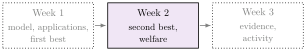
- the incentive constraint
- the second-best contract
- what it tells us
- which action to induce
- the cost of hidden action
- too little effort, never too much
Where we left off
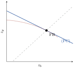
Hide the action
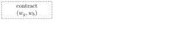
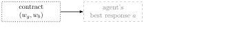
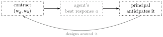
The incentive constraint
When effort pays
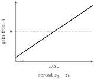
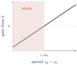
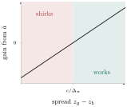
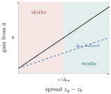
Full insurance kills incentives
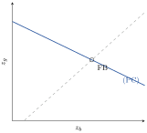
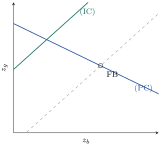
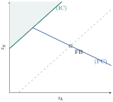
The feasible set
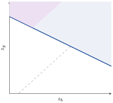
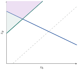
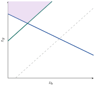
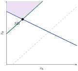
Theorem 3.2: the second-best contract
- High action: \(z_g^*=u_0+(1-\ml)\dfrac{c}{\Dp}\), \(z_b^*=u_0-\ml\,\dfrac{c}{\Dp}\); (PC) and (IC) bind.
- Low action: full insurance at \(u_0\).
- \(\ah\) is induced iff \(\Dp\Dy\ge C^{SB}-h(u_0)\), where \(C^{SB}=\mh h(z_g^*)+(1-\mh)h(z_b^*)\).
Key idea: mean and spread
Mean and spread in contract space
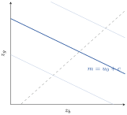
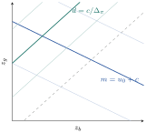
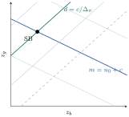
Step 1: (PC) binds
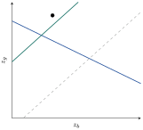
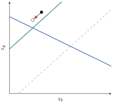
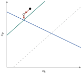
The perturbation must respect every constraint: that is why the shift is parallel.
[full proof: Step 1]
Step 2: (IC) binds, because spread is costly
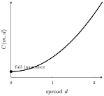
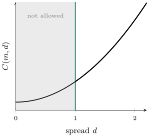
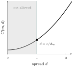
Example: \(C(10.3,d)=106.09+0.2275\,d^2\). [full proof: Step 3]
The same step in contract space
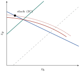
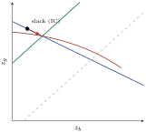
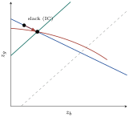
Step 3: solve
The second best in contract space
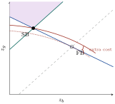
Carrot and stick, calibrated to the shirker
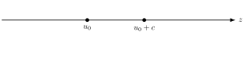
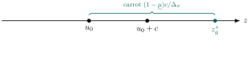
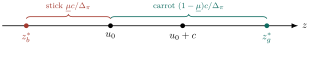
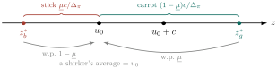
What moves the contract
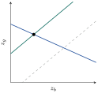
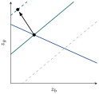
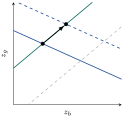
Check (vote, then discuss)
- Fast work becomes twice as tiring.
- Even slow workers often have good days (\(\ml\): \(0.35\to0.5\)).
- His outside job pays more.
- A and B, but not C.
Output is evidence, not merit
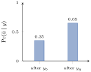
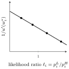
Punishing the innocent
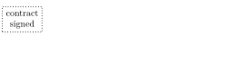
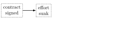
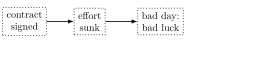
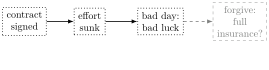
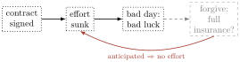
Low action: relax and check
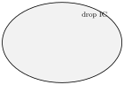
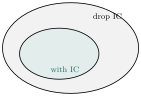
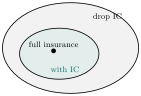
T3, relaxation. [full proof: Step 5]
Part 2: which action, and at what cost?
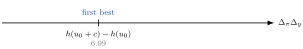
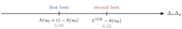
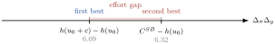
The cost of hidden action
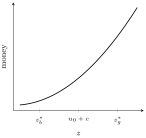
With \(u=\sqrt w\), the agency cost is a variance
Weak evidence is expensive
Too little effort, never too much
Three ingredients
Check (3 minutes)
\(AC=0.65\times0.35\times4=0.91\). \(C^{SB}-h(u_0)=\big(0.65\cdot127.69+0.35\cdot86.49\big)-100=13.27<60\): yes.
This week in one picture
Use the arrow keys or the buttons to move through the slides; each press reveals the next step. Show all steps displays every slide with all its steps at once. The slides use the book’s notation, for example \(\Delta_\pi=\bar\mu-\underline\mu\).